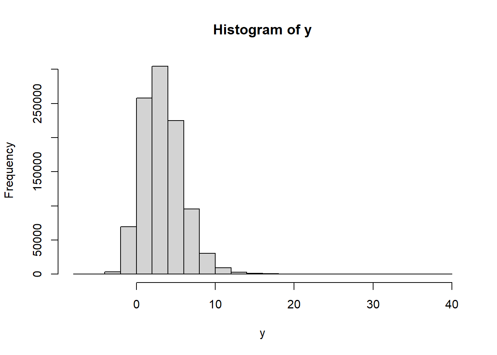

MCM
Propagación de incertidumbres aplicando el método de Monte carlo
Aplicable a un modelo con cualquier número de magnitudes de entrada y una sola magnitud de salida, parte de un muestreo aleatorio de distribuciones de probabilidad. es una alternativa práctica al enfoque GUM, se aplica cuando:
El modelo es no lineal
La FDP para la magnitud de salida se aparta de una normal o de una t, debido a una marcada asimetría.
Es difícil proporcionar las derivadas parciales del modelo, tal como requiere la ley de propagación de la incertidumbre
Los modelos son arbitrariamente complicados
“El método MCM es aplicado para comprobar el marco de referencia GUM”

Comparación

Recorderis Demostración:
la incertidumbre tipo A proviene de la incertidumbre del promedio
\[\bar x=\frac{x_1+x_2+x_3+...+x_n}{n}\]
vamos a obtener su incertidumbre:
\[u(\bar x)=\sqrt{\left (\frac{1}{n}*u(x_1)\right)^2+\left (\frac{1}{n}*u(x_2)\right)^2+...+\left (\frac{1}{n}*u(x_n)\right)^2}\]
\[u(\bar x)=\sqrt{n \left (\frac{1}{n}*s\right)^2}\]
\[u(\bar x)=\sqrt{ \frac{n}{n^2}*s^2}\]
\[u(\bar x)=\sqrt{ \frac{n}{n^2}*s^2}\]
\[u(\bar x)= \frac{s}{\sqrt{n}}\]
¿cuantas simulaciones son necesarias?
Según GUM S1 (2008) Un valor de \(M = 10^6\) suele proporcionar un intervalo de cobertura del 95 % para la magnitud de salida, de forma que la amplitud del intervalo es correcta con una o dos cifras decimales significativas.
\[ \begin{cases} N>>\frac{1}{1-p}, & \\ N>10^4\frac{1}{1-p}, \end{cases} \]
\(N>219781\) donde p es el área de cobertura usualmente p=95.45%
Simulación de las distribuciones de probabilidad
Simulación de la distribución uniforme
## runif(n, min = 0, max = 1)
y=runif(n=1e6,min=-1,max=1)
hist(y)
simulemos los resultados de una incertidumbre por resolución
\[u=\frac{a}{\sqrt 3}=\frac{1}{\sqrt 3}=0.577350 \]
a es la semiamplitud=1, criterio necesario para definir la simulación
simulación
y=runif(n=1e6,min=0,max=2)
hist(y)sd(y)## [1] 0.5772246Ahora simulemos la distribución
Simulación de la distribución triangular
Ejemplo. Generar una variable aleatoria continua con distribución triangular con parámetros a=10, b=30 y c=25
u1<-runif(1e6,0,1)
u2<-runif(1e6,0,1)
m=0
a=2
x=m+(a*(u1+u2-1))
hist(x)Simulación de la distribución normal
#rnorm(n, mean = 0, sd = 1)
y=rnorm(1e6, mean = 0, sd = 1)
hist(y)Simulación de la distribución t de student
# rt(n, df, ncp)
ncp <- seq(0, 6, length.out = 31)
y=rt(1e6, df=8, ncp)
hist(y)
Distribución rectangular ó uniforme
En una distribución rectangular cada valor en un intervalo dado tiene la misma probabilidad, o sea la función de densidad de probabilidad es constante en este intervalo.

Sea \(X∼U(a,b)\), es decir, una variable aleatoria con distribución uniforme en el intervalo (a,b), con \(a,b \quad \varepsilon \quad \mathbb{R}\):
| Descripción | b y a con b>a | a y -a |
|---|---|---|
| fdp f(x) | \(\frac{1}{b-a}\) | \(\frac{1}{2a}\) |
| F(x) | \(\frac{x-a}{b-a}\) | \(\frac{x-a}{2a}\) |
| prom E(X) | \(\frac{a+b}{2}\) | 0 |
| \(E(x^2)\) | \(\frac{b^2+ba+a^2}{3}\) | \(\frac{a^2}{3}\) |
| v(x) | \(\frac{(b-a)^2}{12}\) | \(\frac{a^2}{3}\) |
| sd=u(x) | \(\frac{(b-a)}{\sqrt{12}}\) | \(\frac{a}{\sqrt3}\) |
El rango de una distribución de probabilidad se refiere al conjunto de todos los posibles valores que puede tomar una variable aleatoria en esa distribución. Es la diferencia entre el valor máximo y el valor mínimo de esta variable.
Bibliografía
GUM S1. (2008). JCGM 101:2008 Evaluación de datos de medición-Suplemento 1 de la “Guía para la expresión de la incertidumbre de medida”-Propagación de distribuciones aplicando el método de Monte Carlo. www.cem.es,